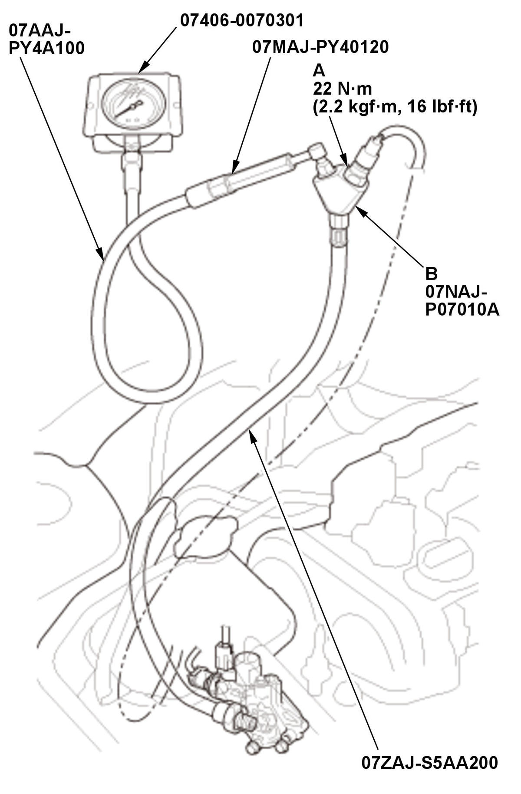

DTC P2646
DTC P2646 : Rocker Arm Oil Pressure Switch Circuit Low Voltage
Special Tools Required
Pressure Gauge Adapter 07NAJ-P07010A
A/T Low Pressure Gauge w/Panel 07406-0070301
A/T Pressure Test Hose 07AAJ-PY4A100
A/T Pressure Adapter 07MAJ-PY40120
Oil Pressure Hose 07ZAJ-S5AA200
NOTE:
- Before you troubleshoot, review the general troubleshooting information .
- If DTC P2648 and/or P2649 are stored at the same time as DTC P2646, troubleshoot those DTCs first, then recheck for DTC P2646.
| DTC Description | Confirmed DTC | Pending DTC |
|---|---|---|
| P2646 Rocker Arm Oil Pressure Switch Circuit Low Voltage |
DTC (PGM-FI)
- Oil level check
-1. Check the engine oil level .
Is the level OK?
YES
Go to step 2.
NO
- Problem verification
-1. Turn the vehicle to the ON mode.
-2. Clear the DTC with the HDS.
Clear DTC
-3. Do the VTEC TEST in the INSPECTION MENU with the HDS.
VTEC TEST
Is the result OK?
YES
Intermittent failure, the system is OK at this time. Check for poor connections or loose terminals at the rocker arm oil pressure switch and the PCM. If the on-board snapshot of this DTC is recorded, try to reproduce the failure under the same conditions with the on-board snapshot .
NO
The failure is duplicated. Go to step 3.
- Determine possible failure area (VTM line, others)
-1. Turn the vehicle to the OFF (LOCK) mode.
-2. Disconnect the following connector.
Rocker arm oil pressure switch 2P connector -3. Turn the vehicle to the ON mode.
-4. Check the parameter(s) below with the HDS.
Signal Threshold Current conditions Values Unit Values Unit VTEC PRES SW ON Do the current condition(s) match the threshold '
YES
Go to step 5.
NO
Go to step 4.
- VTEC system oil pressure check
-1. Turn the vehicle to the OFF (LOCK) mode.
-2. Remove the rocker arm oil pressure switch (A), and attach the special tools as shown, then attach the rocker arm oil pressure switch to the oil pressure gauge adapter (B).

Courtesy of HONDA, U.S.A., INC.-3. Reconnect the following connector.
Rocker arm oil pressure switch 2P connector -4. Start the engine.
-5. Do the VTEC TEST in the INSPECTION MENU with the HDS.
VTEC TEST
-6. Check the oil pressure.
Does the oil pressure increase to 392 kPa (4.00 kgf/cm2 , 56.9 psi)?
YES
Replace the rocker arm oil pressure switch .
NO
Inspect the VTEC system. If it is OK, replace the rocker arm oil control valve .
- Shorted wire check (VTM line)
-1. Turn the vehicle to the OFF (LOCK) mode.
-2. Jump the SCS line with the HDS, and wait more than 1 minute.
-3. Disconnect the following connector.
PCM connector E (80P) -4. Check for continuity between test points 1 and 2.
Test condition Vehicle OFF (LOCK) mode Rocker arm oil pressure switch 2P connector: disconnected PCM connector E (80P): disconnected Test point 1 PCM connector E (80P) No. 59 Test point 2 Body ground Is there continuity?
YES
Repair a short in the VTM wire between the PCM (E59) and the rocker arm oil pressure switch.
NO
The VTM wire is OK. Check for any authorized service information related to the DTCs or symptoms you are troubleshooting, or substitute a known-good PCM , then recheck. If DTC P2646 goes away and the PCM was substituted, replace the original PCM .